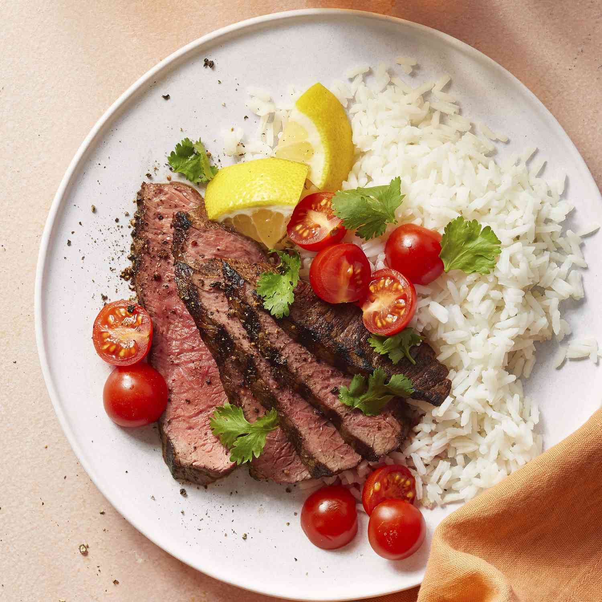

Picanha

Picanha is a popular Brazilian cut of beef known for its rich flavor and tenderness. It's typically seasoned simply with salt and grilled to perfection, often served with traditional side dishes like rice and beans.
Ingredients
- 2-3 pounds picanha (top sirloin cap), trimmed
- 2 tablespoons coarse sea salt
- 1 tablespoon olive oil
- 2 cloves garlic, minced (optional)
- 1 teaspoon black pepper (optional)
Steps
- Preheat your grill to medium-high heat.
- Score the fat on the picanha in a crisscross pattern, being careful not to cut into the meat.
- Rub the picanha with olive oil, then season generously with coarse sea salt. Add minced garlic and black pepper if desired.
- Place the picanha on the grill, fat side up. Grill for about 10-15 minutes per side, or until the internal temperature reaches 135°F (57°C) for medium-rare or 145°F (63°C) for medium.
- Remove the picanha from the grill and let it rest for 10 minutes before slicing.
- Slice against the grain and serve.